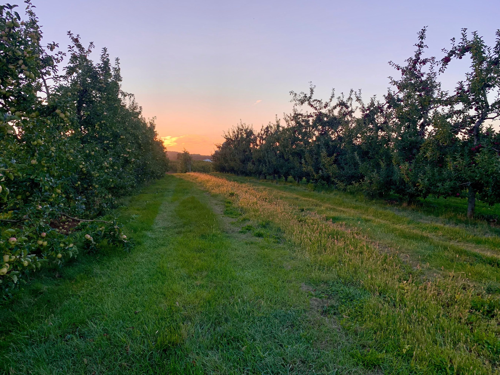
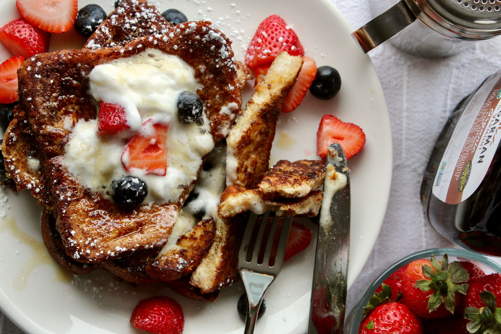
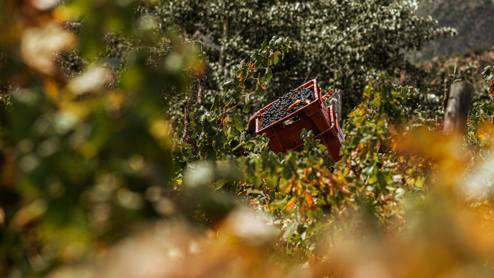
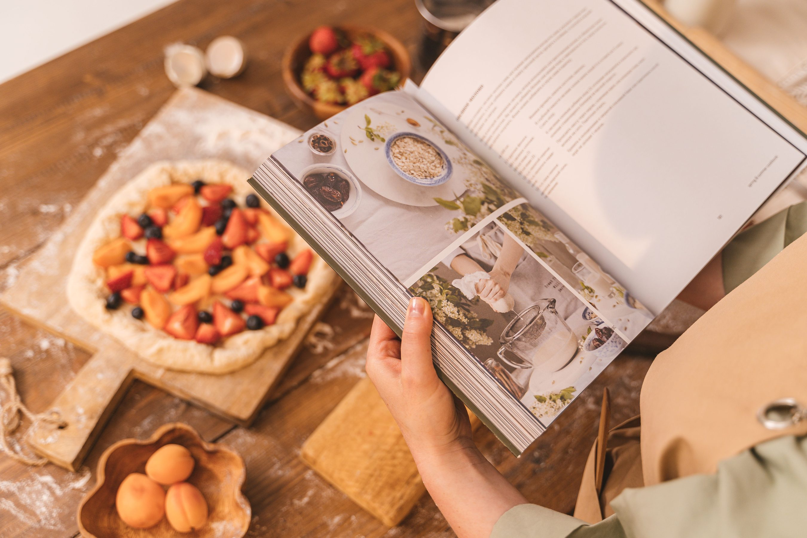
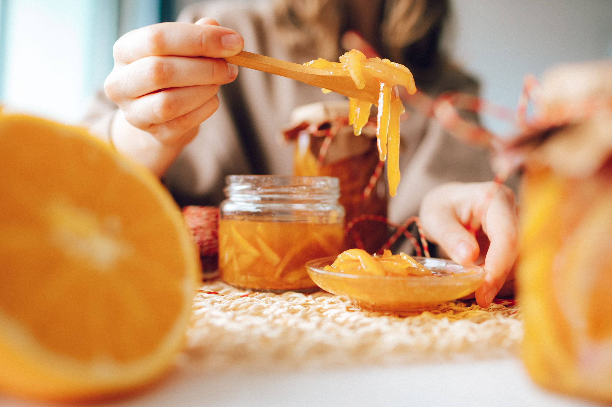
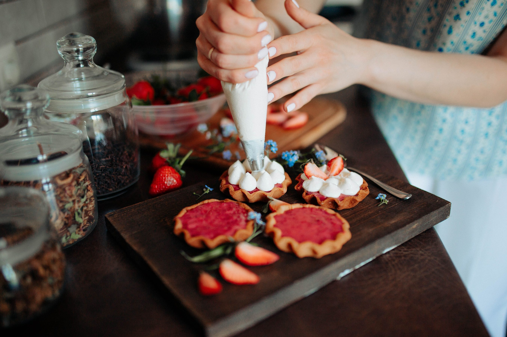
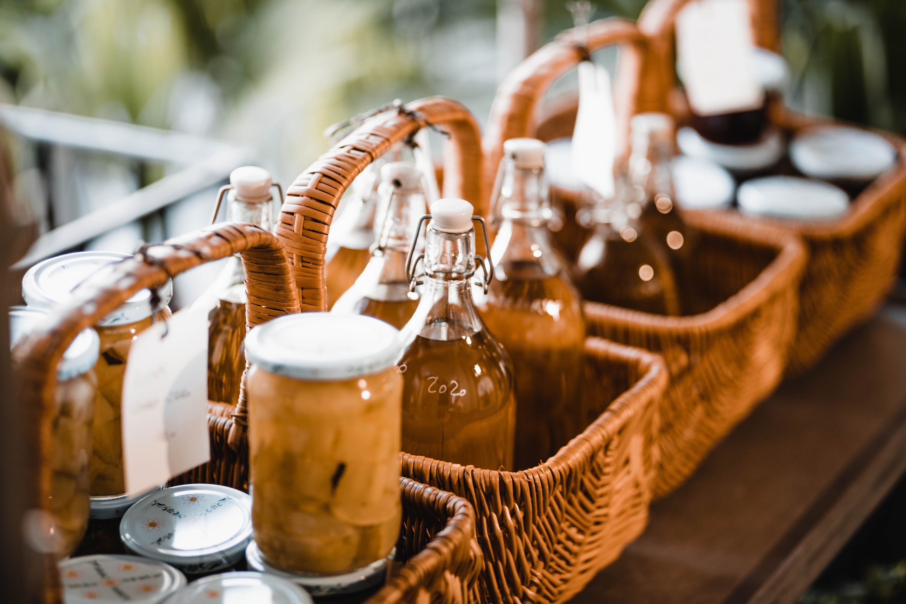

Featured · Farm stories · 4 min read
What a seasonal harvest means for your jar.
Why the fruit sets the pace, and why the best recipes begin with what is growing.
Read the harvest storyThe Orchard & Jar journal
Recipes, harvest stories and small ideas for making the most of your favourite jar.

Featured · Farm stories · 4 min read
Why the fruit sets the pace, and why the best recipes begin with what is growing.
Read the harvest story6 stories in the journal

Recipes · 5 min read
A few thoughtful toppings turn a humble slice into a breakfast worth sitting down for.
Read the story
Farm stories · 4 min read
Why we plan our preserving days around the fruit, rather than the calendar.
Read the story
Gifting · 6 min read
Choose flavours, pairings and a handwritten note for a gift that feels personal.
Read the story
Kitchen notes · 5 min read
Bright citrus, tender peel and the satisfying bite that makes marmalade special.
Read the story
Recipes · 7 min read
From thumbprint biscuits to a quick glaze, a jar goes much further than toast.
Read the story
Kitchen notes · 4 min read
The gentle rhythm of sorting, simmering and filling jars in our kitchen.
Read the storyTry a broader word or a different topic.
Good fruit. Good company.
Choose a jar to accompany your next breakfast story.